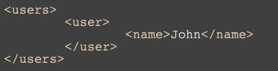
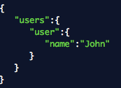

| Webbteknik II | |
| 1DV449 | |
| Linnéuniversitetet, HT2012 |
VILKA?
Föreläsare, handledare:
Johan Leitet, johan.leitet@lnu.se
Kursansvarig, examinator, föreläsare, handledare:
John Häggerud, john.haggerud@lnu.se
VAD?
Webben
- Programmable Web
- Semantic Web
- Mobile Web
- Real-time Web

HTTP
Datautbytesformat
XML, JSON, CSV, YAML....


XSLT
Transformering mellan XML-applikationer
Mashups
Webb-API:r
REST
Webb-
säkerhet
Responsive
Design
KURSPLAN
Arbeta med webbtekniker samt använda dessa för utveckling mot olika enheter.
Redogöra för olika säkerhetsrisker som kan förekomma i en webbapplikation.
Utveckla nya och använda befintliga webbtjänster (webbapi:er) samt sammanfoga dessa till en enhetlig applikation (Mashupapplikation).
EXAMINATION
1. Laborationskurs
Laborationsförberedande seminarium
Laborationer
2. Projektuppgift
Enskild större uppgift (mashup-applikation)
FÖRKUNSKAPER
För att antas på kursen krävs:
- Webbteknik I 7,5hp (1DV403) eller motsvarande
- PHP, 7,5 hp (1DV408) eller motsvarande
Förmåga att självständigt sätta sig in och lösa problem med ovanstående kunskap
FRÅGOR?